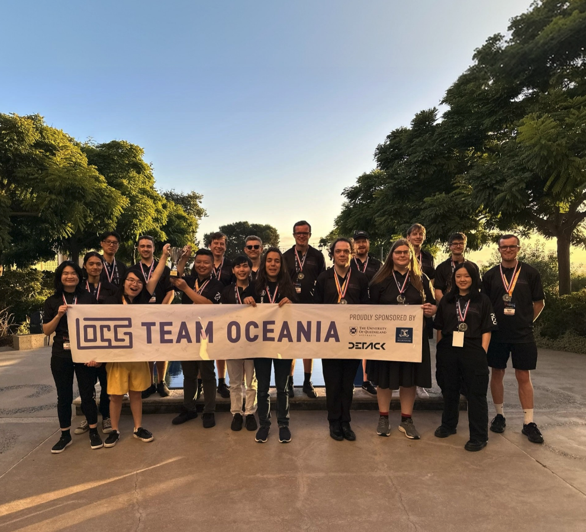

Team Oceania is a team of 17 cybersecurity students and professionals from across Australia
and New Zealand. The team represents the Oceania region on the global stage by competing in
cyber competitions at the highest level, with the pinnacle event being the International
Cybersecurity Challenge (ICC). Team Oceania was established in 2022 and participants are
selected annually to maintain the highest degree of talent and diversity.